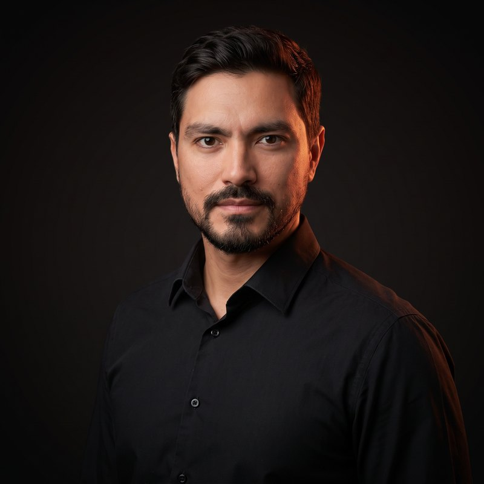
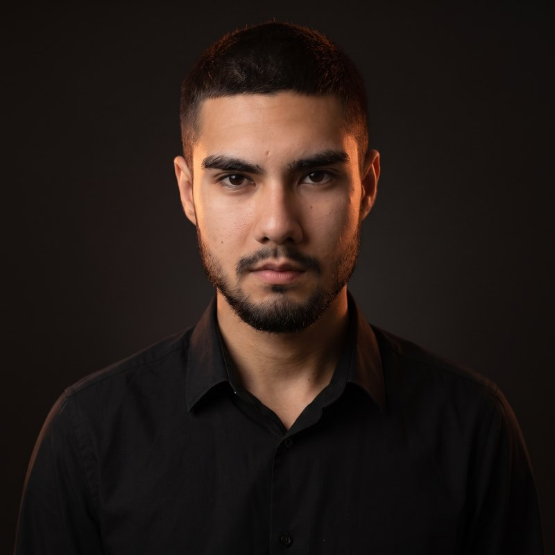
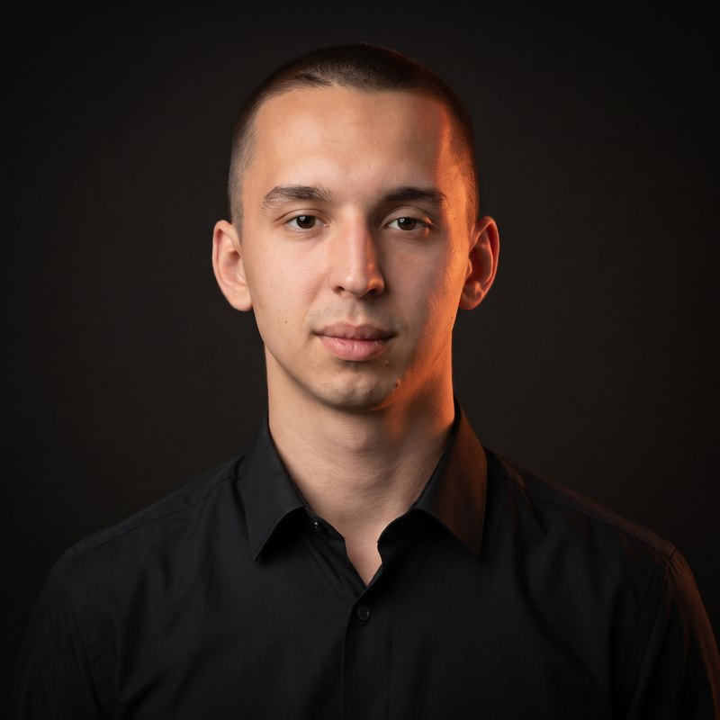
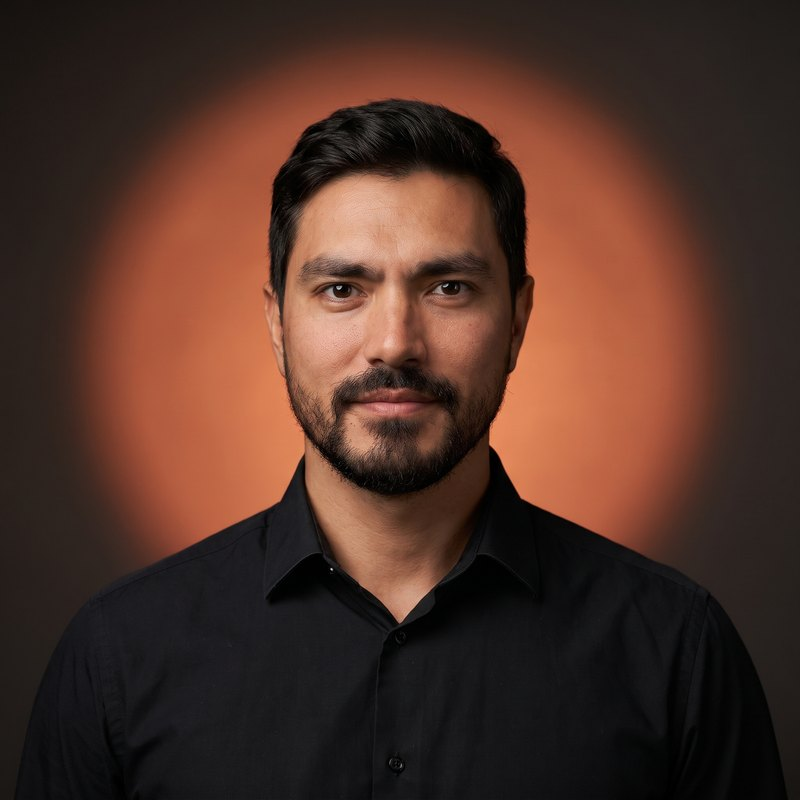
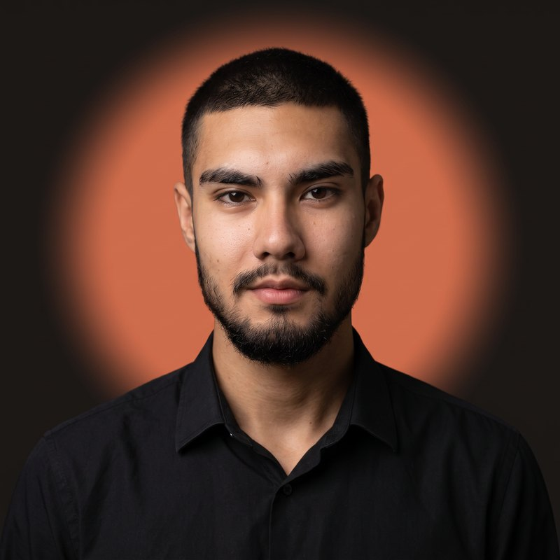
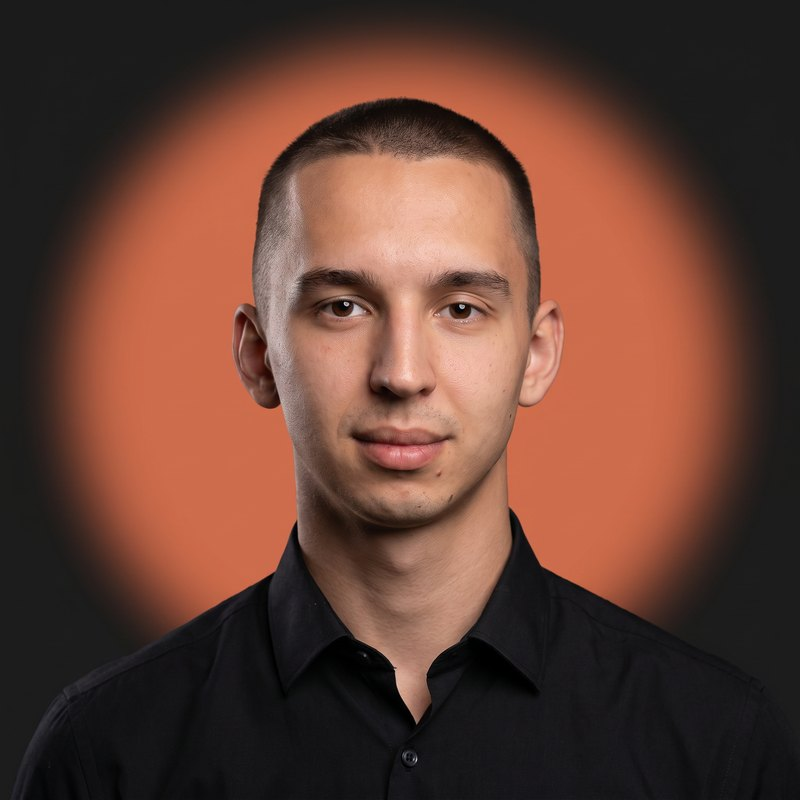
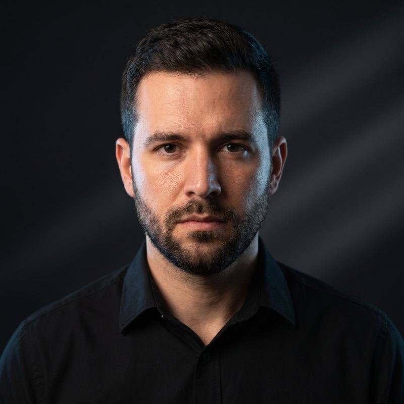
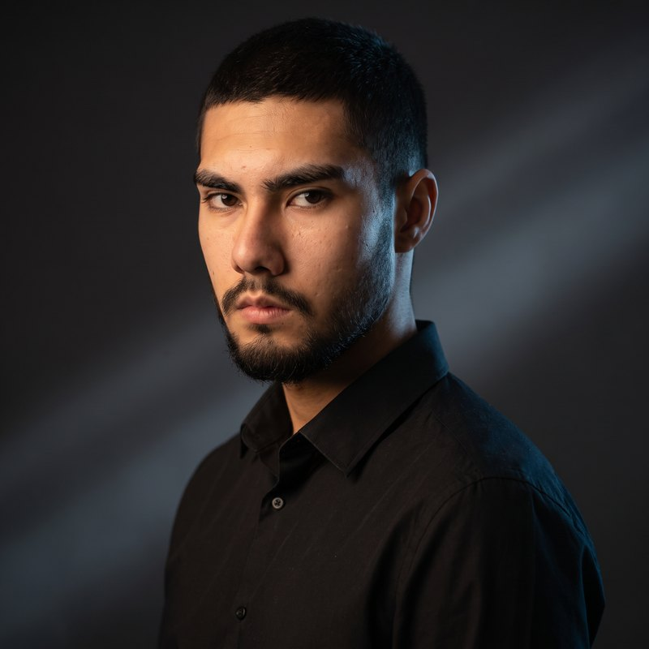
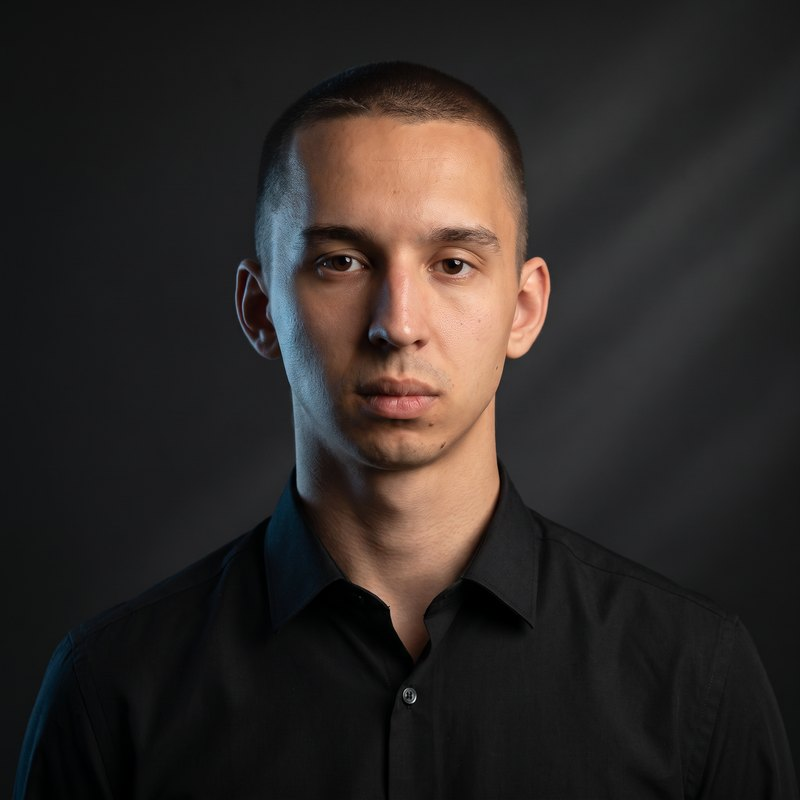

Лица — по вашим фотографиям, все в чёрных рубашках, фон в цветах сайта. Выберите один стиль — поставлю его всем троим на сайт.
Почти чёрный фон как у сайта, оранжевая подсветка по краю. Строго и дорого.



Круг фирменного оранжевого цвета — отсылка к солнцу в логотипе. Самый заметный и брендовый.



Кинематографичный свет, голубой акцент — второй цвет сайта. Серьёзнее и техничнее.


